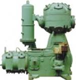
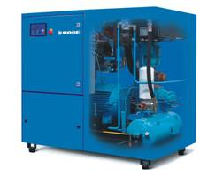
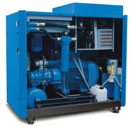

Статья. Компрессоры бытовые и промышленные. Обзор рынка компрессоров
Сжатый воздух в качестве энергоносителя имеет весьма широкое применение во всех отраслях промышленности. достаточно широкое применение. Привод различных пневматических машин и механизмов, пескоструйная обработка, покрасочные работы, прессование – список обширен и разнообразен. Поэтому рынок компрессоров – машин для производства сжатого воздуха – так многолик, что порой трудно сделать правильный выбор. Именно поэтому в данной статье дается очередной анализ, оборудование какого класса необходимо в каждом конкретном случае. Поскольку гамма выпускаемых компрессоров весьма разнообразна, мы рассмотрим диапазон компрессоров, ограниченный по давлению 40 атм, по производительности – 50 м3/мин. Это наиболее востребованные компрессоры, применяющиеся повсеместно.
Итак, рассмотрим вначале самые маленькие компрессоры – так называемый бытовой класс. Это поршневые компрессоры, как правило, соединенные с электродвигателем соосно через муфту. Потребляемая мощность не превышает 2,2 кВт, давление – до 8 атм, цена – порядка 12-16 тыс.руб. Предназначены эти компрессоры в основном для эпизодического использования, продолжительность работы данных компрессоров не превышает 10 мин в час (в противном случае они перегреваются и быстро выходят из строя). Ни в коем случае не годятся для круглосуточной работы. Такой компрессор хорошо подходит в гараже для подкачки шин, покраски, продувки, не более того. Удобны эти маленькие компрессоры для транспортировки, мало весят, как правило, имеют встроенный регулятор давления. Размер воздухосборника компрессора– от 6 до 100 л. К недостаткам этих компрессоров можно также отнести повышенный шум при работе и большой унос масла. Имеются компрессоры без смазки цилиндро-поршневой группы, они удобны для покраски, поскольку при сжатии масло в воздух не попадает. Однако ресурс таких компрессоров несколько ниже, чем у машин со смазкой. В основном данная группа представлена компрессорами итальянского производства, фирм FIAC, FINI, ABAC, а также российского завода АСО и белорусского- Remeza.
Следующая группа – полубытовые компрессоры (с тем же успехом их можно назвать полупрофессиональными компрессорами). Поршневые компрессоры с ременным приводом, компрессионный узел (головка компрессора) – либо из чугуна (это предпочтительнее), либо из алюминиевых сплавов. Эти машины уже позволяют получить давление до 16 атм, производительность до 2 м3/мин. Комплектуются эти компрессоры ресивером объемом от 50 до 100 л. Плохо приспособлены данные компрессоры для круглосуточной работы. Единственным достоинством этих компрессоров является относительно невысокая стоимость по сравнению с винтовыми и промышленными поршневыми (диапазон цен – до 70 000 руб.), простота конструкции. Недостатки – сравнительно небольшой ресурс компрессора, необходимость частых ремонтов, высокий уровень шума, большое содержание масла в сжатом воздухе после компрессора и, соответственно, унос масла после компрессора, невысокая экономичность компрессорной установки. На рынке представлены компрессоры в основном итальянского, белорусского и российского производства. Примеры- серия компрессоров Aircast (с чугунной головкой) белорусского производства, компрессоры АСО – российского. Необходимо отметить тот факт, что производительность поршневых компрессоров этого класса (и бытовых компрессоров тоже) указывается обычно по всасыванию, чтобы подсчитать реальную производительность эту цифру нужно умножить на 0,74. Это связано с влиянием “мертвого объема” и повышением температуры сжимаемого воздуха. Привод компрессоров в основном электрический, однако есть исполнения с дизельными и бензиновыми двигателями, что иногда бывает очень удобно, к примеру, для строителей. Действительно, когда рабочие места удалены одно от другого, удобнее иметь три компрессора с производительностью, достаточной для привода отбойного молотка, чем один большой компрессор (ПКСД или ЗИФ) на три молотка, тем более что по цене это практически одно и тоже. Компрессоры этого типа уже могут применяться для промышленных целей (небольших производств, автосервисов и т.д.), однако не должны работать более 30 мин в час. Вообще данный класс машин часто выступает как более дешевая альтернатива винтовому , либо поршневому компрессору промышленного исполнения, при недостатке средств. Однако никогда не следует забывать о том, что чрезмерная экономия на компрессорном оборудовании может привести к высоким эксплуатационным расходам и частым простоям оборудования по причине ремонта компрессора. Вопрос о возможности применения данных компрессоров для промышленного производства достаточно серьезен и решается в зависимости от конкретных условий. Как правило, в подавляющем большинстве случаев применения эксплуатационные расходы в расчете на 2 года работы значительно превышают аналогичные расходы при эксплуатации компрессоров промышленного исполнения.
Следующая группа- компрессоры промышленного исполнения, предназначенные для круглосуточной эксплуатации.

Промышленные поршневые компрессоры производят, к примеру, компании BOGE (Германия), Ingersoll Rand. Из отечественных производителей можно назвать такие заводы, как “Пензкомпрессормаш”, “Краснодарский компрессорный завод” (Краснодар), “Уралкомпрессор” (Екатеринбург) . Данный тип компресоров производил бывший завод "Борец". Достоинство данных машин – прежде всего достаточно высокая экономичность (малый удельный расход электроэнергии). Недостатки – большая материалоемкость, необходимость в фундаменте, высокий уровень шума и вибрации. Часто требуют водяного охлаждения. Диапазон производительности – от 110 л/мин до 120 м3/мин. Диапазон рабочего давления (изб.)- от 8 до 40 атм. Варианты электродвигателей – однофазные и трехфазные.
Винтовые компрессоры – оптимальный выбор для промышленного предприятия с требуемым расходом 0,2 – 50 м3/мин и максимальным давлением от 7,5 атм до 13 атм. Вот список только основных их преимуществ:
Меньшая масса и габариты по сравнению с поршневыми компрессорами;
Высокая надежность (гораздо меньшее количество деталей, чем в поршневом компрессоре, нет клапанов и поршневых колец, которые являются наиболее быстроизнашиваемыми деталями, малое количество подвижных частей);
Малая металлоемкость;
Низкий шум (компрессоры оборудованы шумопоглощающим кожухом);
Малая вибрация из-за отсутствия частей, совершающих возвратно-поступательное движение;
Меньшие колебания давления нагнетания на нагнетании;
Воздушное охлаждение (водяное охлаждение не дает практически никаких особых преимуществ, устанавливается опционально);
Возможность обеспечения степени сжатия в одной ступени до 13 атм;
Отсутствие необходимости в фундаменте – из-за низкого уровня вибрации;
Простота и удобство обслуживания и эксплуатации. Обслуживание винтового компрессора (смена фильтров и масла) производится раз в 2000 часов- для компрессоров, использующих минеральное масло (например, Airpool, Atlas Copco, Komsan или Compag). Срок эксплуатации у таких дешевых компрессоров демпингового типа: 3-5 лет.
Качественно исполненные и надежные промышленные компрессоры предполагают значительно более длительные интервалы межсервисного обслуживания (например, срок замены синтетического масла Syprem 8000S в винтовых компрессорах BOGE составляет 9000 часов работы, а ресурс работы: 20 лет тяжелой промышленной эксплуатации!). В межсервисные интервалы компрессор не требует присутствия персонала;
Максимальная приспособленность для длительной непрерывной работы. В условиях длительной непрерывной работы винтовой компрессор просто незаменим, поскольку при работе винтового компрессора износа винтов практически нет – между ними образуется масляный клин, тонкая пленка, исключающая трение. Небольшой износ винтов возможен только в краткий момент пуска, когда может произойти касание поверхностей винтов, а масляный клин между ними еще не сформирован. В поршневых машинах износ поршневых колец и клапанов происходит постоянно;
Малый унос масла – не более 1-3 мг/м3;
Компактная конструкция – все узлы, включая не только механическую и электронную части, но и осушители, фильтры, конденсатоотводчики и устройства разделения конденсата возможно установить в одном корпусе.

По экономичности современные винтовые компрессоры ни в чем не уступают поршневым компрессорам промышленного класса. По цене они дороже поршневых машин, однако при интенсивной эксплуатации, с учетом всех эксплуатационных расходов разница в цене очень быстро окупается. Кроме того, винтовые компрессоры отличаются высокой надежностью, что особенно важно в тех случаях, когда простои оборудования по причине ремонтов компрессора ведут к значительным финансовым потерям (иногда превышающим стоимость компрессора).
Здесь приведен лишь общий обзор современного рынка компрессоров, ни в коем случае не претендующий на полноту. Вообще выбор компрессора, правильный выбор производительности и давления, с дальнейшим подбором оборудования для подготовки сжатого воздуха (либо с этим оборудованием в корпусе компрессора)- достаточно серьезное дело, подходить к нему нужно взвешенно, оценивая все факторы, а не руководствуясь только лишь ценой.